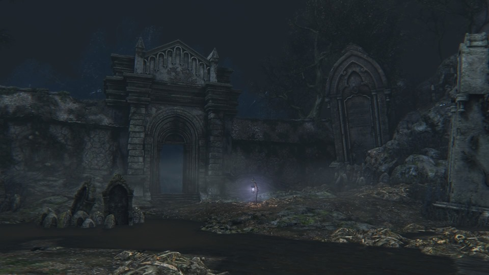
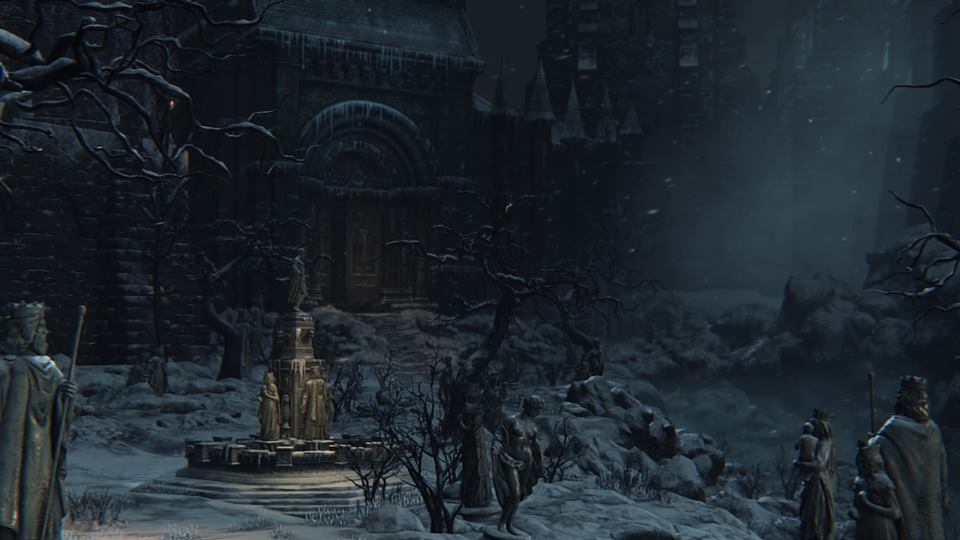

Yharnam

Yharnam is an imposing and sprawling metropolis characterized by Gothic and Victorian architecture. Yharnam's Victorian architecture is reminiscent of late 19th Century European cities including Paris, Edinburgh, Cologne and London. Residents of Yharnam are called Yharnamites. The town appears rather grim and decadent and has been ravaged by a mysterious plague, becoming infested with dangerous beasts and demented citizens. During the outbreak, the inhabitants of Yharnam formed large street mobs and pursued those who were infected by the plague, the beasts that terrorize the city, and trespassers who dared to set foot in the dark streets. Those unfortunate enough to be captured by the mobs of crazed citizens meet a gruesome end, often at the stake.
Great Bridge
The Great Bridge is a massive bridge that connects Central Yharnam to the main entrance of the Cathedral Ward. It is littered with abandoned carriages that likely were supposed to be brought to the Cathedral Ward. However, the spreading scourge of beasts had infested Yharnam too deeply and as an act to safeguard their residence, the Healing Church blocked the path to it from the Great Bridge to ensure safety of the Ward.
Hunter's Dream

The Hunter's Dream is an otherworldly replica of the original Hunter's Workshop, now called the Abandoned Old Workshop under the Healing Church Workshop. Created by Gehrman and the Moon Presence, the Hunter's Dream was originally intended as a way to ensure there were always hunters to fight the beasts. Gehrman eventually realized that the Dream was bound to his consciousness, with each requiring the existence of the other, and nearly went mad from the revelation of never dying yet serving an eternal cause. After defeating Mergo's Wet Nurse, the dream begins to fall apart, with the main building catching on fire as the obvious sign of it. Gehrman offers to release the Hunter from the dream, and become one of those "who no longer dream", such as Djura and Eileen. The player is then severed from the dream, and returns to reality. If the Hunter refuses Gehrman's offer, then he will fight the player. Should the player defeat him, the Moon Presence descends and names the Hunter the new head of the Hunt, taking Gehrman's place. If the Hunter had previously consumes three Umbilical Cords, he/she will realize the conclusion Gehrman came to, and reject the Moon Presence, fighting it for control of the Dream. After slaying the Great One, the players become a Great One themselves at the end of the battle. Pushing humanity into its next phase of existence.
Cathedral Ward
Cathedral Ward is a large district that serves as the primary base of operations for the Healing Church, it is home to some of the Church's more powerful members, such as the Church Giants and Church Servants. Every night, the gates of the Ward close as hunters venture out to combat the Beasts. Navigating through the streets of Cathedral Ward is time consuming, mostly because it is place that has many streets and paths to other locations, constituting what is easily the largest part of Yharnam's city. This area is often confused with Oedon Chapel, due to the lamp being located in it, having the title of "Cathedral Ward". In reality, Oedon Chapel is a tiny safe haven that is merely a speck of what constitutes the Cathedral Ward itself.
Tomb of Oedon

Located in Central Yharnam, the Tomb of Oedon is the location of Father Gascoigne and, later, his companion, Henryk. Like the Forbidden Grave, the Tomb of Oedon supposedly serves as the burial ground for a Great One. In this case, the Great One is Oedon, a formless being. Aptly-located, the Tomb of Oedon precedes Oedon Chapel and, ergo, Cathedral Ward.
Old Yharnam
Old Yharnam is an abandoned district located in the valleys of Yharnam. Since the town was set to flame long ago, most buildings are in a decaying state and the town is currently inhabited by dangerous Beasts and a venerable old hunter named Djura. A former district of Yharnam, Old Yharnam was abandoned and set to flame long ago due to the increasing number of cases of the beast's disease in the area. It is said that the citizens of Yharnam can hear the starving howls coming from the valley in which the town is located, which reminds them of the destruction of Old Yharnam. The hunter Djura makes this place his refuge, slaying all who dare disturb the tranquillity. Old Yharnam is also the place of the plague's origins - which the plague was caused by ashen blood, making the beasts in Old Yharnam poisonous (female Beast Patients).
Church of the Good Chalice
At the very bottom of Old Yharnam, in a valley, lies the Church of the Good Chalice. It is unknown if it was natural, time or the flames from the Fire that burned down the rest of Old Yharnam, or both that has reduced the church to its decrepit state. Though its outside and inside are in ruins one can still observe the decorated altar that stands at the end of the church, and despite its outward appearance, it is still safe and spacious inside. This is likely what the Blood-starved Beast thought of when it decided to take residence within.
Grand Cathedral

A massive Cathedral used for worship, watched over by Vicar Amelia. A large bestial skull can be found on the altar. Interacting with it will show the player a flashback of a conversation between Master Willem and Laurence. While teased to be his skull, it was never truly confirmed to belong to Laurence until The Old Hunters DLC, where an item called "Laurence's Skull" can be found in the Hunter's Nightmare. Curiously enough, it appears to be a normal human skull. It's description states that his human skull exists only within the Nightmare realm, leading one to believe it is a representation of what Laurence once lost.
Hemwick Charnel Lane

Hemwick Charnel Lane is one of several districts in Yharnam. As its name indicates, it is essentially a mass grave that follows a direct, straight road, though the player will have to unlock the main street by exploring the sidepaths. The place seems to have been locked to prevent the Scourge of Beasts from infecting the area, as the forest at the entrance to the Charnel Lane is protected by Huntsmen and Hunting Dogs, in order to prevent any beast from traversing the gate. Inside Hemwick it becomes quickly apparent that this small village is obsessed with the handling of the deceased. Many tiny houses with chimneys resemble crematoriums, and there are many guillotines to cut the bodies into pieces. Meanwhile, the crows feast as multiple crosses are raised with corpses on them so they are disfleshed and likely easier to handle. Near the last area of this location, there is a large plaza where Executioners, Hunting Dogs and Grave Women patrol the area. This plaza was once connected to a large stone bridge that led to the now Forsaken Castle Cainhurst, and still has a small monument at the centre of it, dedicated to the old nobles.
Witch's Abode

A dilapidated castle, located deep in Hemwick Charnel Lane, serves as the supposed home of The Witch of Hemwick, who has decorated the interior of her abode with numerous corpses, which all hang from the chains on the ceiling. A few beds can also be found with the tied up remains of the Witch's unfortunate victims. Two sets of wooden ramps are on either side of the arena, which lead to a wooden bridge that has collapsed at one point. Once the witch, and potentially her familiars, lie dead, an archway is revealed at the end of the area, behind the Witch's Abode lamp. Going through this archway, down the stairs, and through the tunnel leads to a door; behind this door is seemingly an interrogation room, where the ceiling has partially collapsed and light shines upon a long-dead hunter, who is tied to a chair. Looting this unfortunate hunter gifts the player with the Rune Workshop Tool or, if they already have the tool and are on a subsequent playthrough, a Kin Coldblood (12).
Lower Cathedral Ward
The Lower Cathedral Ward is where many denizens of the Cathedral Ward live. Some interactable NPCs can be found here. The area is well-hidden under the Abandoned Old Workshop and to access the area, players must reach the bottom of the collapsed workshop, via the lift found on the left side of Oedon Chapel. The entire ward is quite claustrophobic, with narrow alleys, sharp corners and neither a single open area, nor a vista. The pavement of these streets are covered with steaming manholes, bottles of blood and wooden boxes.
Forbidden Woods
The Forbidden Woods is a forest on the outskirts of Yharnam. It is home to a village of those chased from the city, and the nesting grounds of giant, venomous snakes. Entering the forest is forbidden by the Church. There are many different places that make up the Forbidden Woods, as it is one of the largest areas in Bloodborne. There are two forests, two windmills, and a village. The path to the Forbidden Woods is through the large plaza with two Church Giants roaming around that connects Cathedral Ward with the Grand Cathedral. The path is at the side and is blocked by one of the giants. The Forbidden Woods door will lie at the end of the path. The Forbidden Woods door will be locked and requires a password. The password is obtained by investigating the skull on top of the altar in the Grand Cathedral, after defeating Vicar Amelia.
Forbidden Grave
Past the Forbidden Woods, through the incessant snakes that have infested it, lies the Forbidden Grave. The Forbidden Grave lamp becomes available after defeating the Shadows of Yharnam. One can summon Old Hunter Henryk and Younger Madaras Twin, provided the player has the Impurity Rune equipped. Much like the entirety of the Forbidden Woods there are tombstones meant for Great Ones here. What makes it interesting is that it an enormous congregation of giant tombstones, about twenty of them, all in a small space when compared with the rest of the forest. This makes the name "Forbidden Grave", a bit misleading. What it is, is a "Graveyard of Great Ones", or, even more bizarre, a "Mass Grave for Great Ones". Regardless, both have interesting implications.
Byrgenwerth
Beyond the Forbidden Woods, past the Forbidden Grave, stands Byrgenwerth College, a research building of older times, from times pre-dating the Healing Church's existence and political power. Overlooking a lake, the building stands serenely as if gazing the reflection of the moon. This is a place of higher learning, of teachings most obscure that delve into the mysterious secrets of the Chalice Labyrinths, the Arcane knowledge of the Cosmos and the Great Ones that inhabit it. Byrgenwerth is the name of both the building and the institution that began the study of human transcendence, some members of Byrgenwerth went on to establish the Healing Church with Laurence at the helm, while Master Willem, the founder of the Byrgenwerth Scholars remained quietly by lake in his rocking chair, gazing at the moon in wonder.
Yahar'gul, Unseen Village
Yahar'gul was originally a city for the Mensis Scholars to explore the nature of Great Ones and how to propel humanity into its next evolutionary step, much like Byrgenwerth and the Choir they believed that it was from Insight, the "eyes on the inside" and the pursuit of forbidden Arcane knowledge was the staircase that allowed humanity's ascend into godhood. However, unlike those other groups, the School of Mensis was prepared to do whatever it took, without any remorse or consideration for the consequences. It would seem the experiment by the School of Mensis was to attempt the creation a Great One. But something is quite unclear, as it would seem that the Pthumerians became somehow involved. In fact, it would appear that they perhaps took over the entire city after the Mensis ritual had transported the minds of the entire School of Mensis into the Nightmare of Mensis. However, after the Blood Moon rises, it would seem that the Pthumerians became more active, and began to perform blood rites to summon the dead population and control them at their whim. All foes of this area have become gruesome amalgamates of flesh, or reanimated corpses, which are controlled by the Bell-ringing Women. They then began to summon what would seem to be the vessel for a Great One, The One Reborn. It is presumed this vessel was meant for Mergo. If, the player did not interrupt it that is. It is unknown wether what killed the populace was the Mensis Ritual or the preparations of the Pthumerians' rite for summoning The One Reborn. Many Great One Amygdala take up residence upon the chapels in the area, as they were drawn to prayers.
Advent Plaza
Located at the end of Yahar'gul, Advent Plaza is the name given to the chosen place of birth to The One Reborn. It is a giant open plaza with archway bridges that connect both sides of the Plaza, which can be accessed by a spiraling staircase in either side that takes players into the balconies. On said balconies, there are 6 Bell-ringing Women, performing a most unholy ritual in order to spawn The One Reborn. At the end of Advent Plaza lies what appears to be a small chapel, with the entirety of the Mensis School dead inside. Micolash's mummified corpse is at the center of it, and, with a mere touch, the Hunter will be transported into the Nightmare of Mensis.
Lecture Building
Former Lecture Building, probably a part of Byrgenwerth. Lecture halls are still full of former scholars sitting in their chairs. It's divided into Lecture Building and Lecture Building 2nd Floor, both with their own lamps. A shortcut connecting both floors can be unlocked from the 2nd floor. Entrance can be found in Cathedral Ward. Proceed from Grand Cathedral Lamp. At the very end of the road is a forgotten church with Lesser Amygdala guarding the entrance. Make sure you have a Tonsil Stone and allow it to grab you. The building is not physically accessible by any means, as it's a part of the Nightmare.
Nightmare of Mensis

When Micolash and the School of Mensis sought an audience with Mergo, they would likely never believe the events that would have transpired from it. The sacrifice of their own physical bodies was needed to project their minds into the realm of nightmares, but that sacrifice served their needs and bore its fruits. This realm was hosted by none other than Micolash, and it was by his own design or want that the Nightmare of Mensis came to be. The giant castle-like structure is divided into three very specific places: The Chapel where the Nightmare Apostles reside, at the left-most side of the whole structure. Mergo's Loft, which houses the most important foes in the area, and is located on the right side. The Great Bridges that connect both buildings, the top and middle one containing gardens, and the bottom one being simply a pathway. In the middle distance there is an enormous tower, where something gazes from afar, a giant spotlight that follows anything in its line of sight and induces Frenzy.
Wet Nurse's Lunarium
At the very top of the Nightmare of Mensis lies the Wet Nurse's Lunarium, where Mergo's Wet Nurse tends to the infant Great One Mergo. It is a very simple arena, with only one way in and out, through an elevator that is directly in front of where Queen Yharnam lies in wait, gazing at it from below. On the center of the arena stands a baby carriage, not unlike those found in the regular town of Yharnam, yet, still at the center, are dozens of bones, likely human, strewn across.
Abandoned Old Workshop

The Abandoned Old Workshop was the first workshop, founded by Gehrman, the first of the hunters to fight the beasts. When the Healing Church decided to create the Healing Church Workshop and began sanctioning hunters of their own, lead by Ludwig, Gehrman's workshop fell out of use. Overcome by despair and loneliness, he used a Third Umbilical Cord, likely to be the one found at the abandoned workshop, to contact a Great One, the Moon Presence, in order to create the Hunter's Dream. The dream was designed to be a way of helping hunters with the beast hunt by bonding them to both Yharnam and the dream, so if they died in one realm they could awake alive in the other. Another goal of Gehrman's was to find a loyal companion and this was granted by creating a living version, in the dream, of The Doll he made, which can be found in the abandoned workshop. What Gehrman likely did not know was that from the moment the dream was conceived, he was forever bound to it. He is trapped within the dream and is tasked with guiding and helping all the hunters that pass through during the countless hunts. When a hunter fulfils their contract, he is also the one to release them from the dream. He hates his fate and longs to be freed. This can be heard in a rare monologue while he is resting in the gardens.
Forsaken Cainhurst Castle
Forsaken Cainhurst Castle is the giant castle belonging to the Cainhurst Vilebloods, now abandoned to time, and covered in snow and ice, following the raid of the Executioners who slaughtered their inhabitants mercilessly, leaving only the servants alive. Interestingly, the Castle grounds, halls and chambers are completely permeated by four identical statues. What makes them interesting is that only one of the statues is male, while the other three are representative of women. The great, ruined castle is comprised of a large patium filled with ice and dead trees that appears to have catastrophically collapsed under its own weight. A great hall filled with servants that clean the floors and pillars of the luxurious castle; a dining room, with the most luscious silverware decorating the tables can be seen, as well as a large amount of portraits of royalty are exposed on the walls. But the most important part of this decadent construction is the gigantic library that has an unimaginable size, truly colossal and likely an indication of the history and elitist and refined standards of the Vilebloods. Atop the Castle, on the rooftops, a strange, large, wooden throne can be found, and beyond it lies a secret.
Logarius' Seat

Logarius' Seat rests at the highest visible point of Forsaken Cainhurst Castle. This location is impossible to leave without the use of a lamp or a Bold Hunter's Mark or the Hunter's Mark. Since it is impossible to backtrack after reaching the ladder that leads to the boss arena, the developers likely left some Bold Hunter's Marks on a nearby corpse to allow players to retreat, should they be unprepared for the upcoming encounter.
Vileblood Queen's Chamber

The locked-away throne room of the Cainhurst Vilebloods' deceased King and the undying Queen Annalise. The Vileblood Queen's Chamber lamp becomes available after defeating Martyr Logarius, then using the Crown of Illusions to open the secret door behind his throne. This lamp is in that room.
Graveyard of the Darkbeast
It is located between Hypogean Gaol and Old Yharnam, in the lowest area between Djura and the Blood-starved Beast. Initially, this location is only accessible through Hypogean Gaol. The lamp for this area, and the path to Old Yharnam become available only after defeating Darkbeast Paarl.
Upper Cathedral Ward

Once the holding of the Choir, the highest-ranking members of the Healing Church, Upper Cathedral Ward now lies dark. It has now been overrun by the very same beasts that plague the rest of Yharnam below, though a scant few Church Servants still remain. Locked away from all the world, some of the Church's greatest secrets are waiting to be discovered.
Altar of Despair

Within the Cathedral Ward lies the Grand Cathedral and Oedon Chapel. Through Oedon Chapel one can find the Healing Church Workshop which hides away the upper echelons of the Healing Church, in a mysterious place called, Upper Cathedral Ward, home of the Choir. However, this home is nothing but a giant gate that locks away the most terrible secret of the Healing Church. For through the Lumenflower Gardens, one reaches deep into the depths of the Grand Cathedral only to find a giant chamber. The crumbled and waterlogged remains of a Chalice Dungeon known as Great Isz. And there, in the distance, lies Ebrietas, Daughter of the Cosmos. Mourning the mouldy corpse of a deceased spider, not unlike Rom, that was crushed by the rubble. Ebrietas will not attack the Hunter, unless the Hunter attacks her first.
Hunter's Nightmare

The area itself consists of a twisted, nightmarish version of Cathedral Ward filled with terrors and blood-drunk hunters alike. Many parts of the Ward have been replaced with smooth rock faces, and is full of even stronger versions of normal enemies. It essentially has 4 landmarks that exist in Yharnam but with different variations: Oedon Chapel Grand Cathedral Central Yharnam's Dark Building (the building that lies beyond the gate in Central Yharnam) Old Yharnam's Chapel (the chapel that led players down to Old Yharnam itself) Though the Hunter's Nightmare is the name of a lamp, it is also the name of the surrounding area. Access The Hunter's Nightmare is accessed through the Amygdala outside the Oedon Chapel, once the player is in possession of the Eye of a Blood-drunk Hunter.
Underground Corpse Pile

The Underground Corpse Pile is, true to its name, a giant chamber containing countless corpses piled into mounds, there are so many of them in fact to the point that the blood flows like a small river and goes through the entirety of the Hunter's Nightmare. More importantly, it is the lair of the crazed beast Ludwig, who has lost his mind and succumbed to the scourge by his thirst for blood during the Hunt, as have so many other Hunters before him.
Surgery Altar
The Surgery Altar is a most interesting and fascinating manifestation of the Hunter's Nightmare. A secret that existed in the Healing Church and that serves as both a means of adoration and transportation, as a lift. The altar depicts three entities of the Church, one in robes, reading a text, another, also in robes, using a small bell, and finally a man with the hat associated with Provost Willem.
Research Hall

This hidden research facility of the Healing Church, is dedicated to the knowledge and methods of attaining the transcendence of humanity through the creation of Kin. From what is gathered by its denizens - the many Clocktower Patients that did not become wildly violent as a result of going mad; including Saint Adeline - and Simon himself, who has guided players thus far, it appears that the many doctors experimented with the minds of these patients, imbibing them with water somehow. It is implied that the experiments that took place in this hall would culminate with the creation of the Celestial Emissary.
Lumenwood Garden
The arena of the Living Failures. There are many lumenflowers in the garden, as well as a large fountain in the center, but perhaps most astonishingly, there is an overgrown, seemingly mutated lumenflower, that has reached the proportions of a tree.
Astral Clocktower
The Astral Clocktower is where Lady Maria of the Astral Clocktower resides in the Hunter's Nightmare realm, hence her name.
Fishing Hamlet
The Fishing Hamlet is the top layer of the Hunter's Nightmare, invisible from the ground below. The Hamlet is accessed only through the Astral Clocktower. It is composed of a wide market plaza surrounding a large well; a communal area filled with habitation huts, overlooked by a large Lighthouse; a large cave system where the actual fishing occurred; and a beach on the coast. There are many mysteries surrounding this bizarre land, but it is known that this fishing village is where a Great One washed ashore on one of its beaches. That Great One was Kos, and it carried within its body, two things, parasites, and a fetus. Throughout this village, players can observe the degree of decay the sea has had on the village. For instance, corals sprout from everywhere, the water has overflown the village in many places, and either Kos, or the parasites, that were carried by the beached Great One (perhaps even both), have had an effect on the villagers that resided in the Hamlet, having transformed into beings that resemble hybrids of humanoids and fish or molluscs. However, there is an interesting thing to observe about these villagers. They appear to pray to Kos, and they also seem to be harvesting the parasites as appear to use them as fuel. Evidence for this observation can be seen in that they have plenty of large, explosive oil urns laying around, they use firebombs to attack the player, and the candles appear to be burning with the parasites themselves.
Coast
It is the coast where the Great One Kos washed ashore. She was already dead, yet, from her corpse, little parasites were found, and inside her womb, a child lives on. The beach has a shallow depth and allows most to walk further without hindrance from the sea. And the strange yellow moon glooms over the corpse of the deceased Great One.